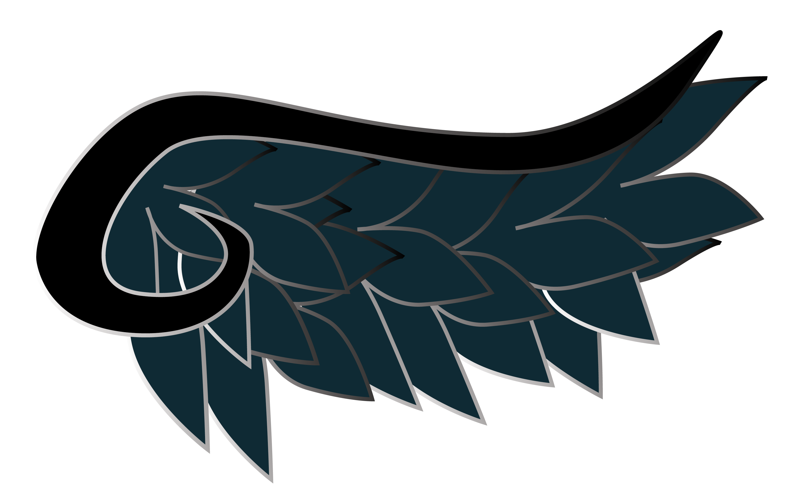
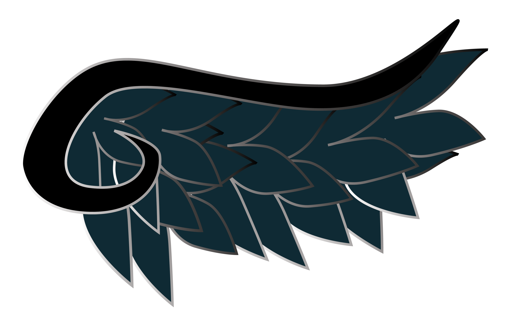

About Me
Jennifer Perez attended Robert F Wagner Jr Secondary School for Art and Technology High school in September 2008 and Graduated the summer of 2012.
Jennifer then enrolled into Queens Borough Community College in fall 2012 and Graduated the summer of 2015 with and Associates in Science.
In Fall 2015 Jennifer Transfered into Queens College and Declared her Major in Graphic Design.
Jennifer decided to major in Design because she decided it was what she was best at doing. Although she enjoys to sculpt and make props, she did not think that she could make a living out of prop making. When Jennifer refers to prop making she is referring to the art of making prop weapons that one would use in a play or better yet comic/anime conventions. People who go to conventions love to cosplay as well known characters, and like to complete their character looks by holding their most common weapon. The props she created generally consist of baking clay, wood, PVC pipe, crafting foam, insulation foam, paper mache, and expanding foam. She still makes props as a hobby and gets occasional requests.